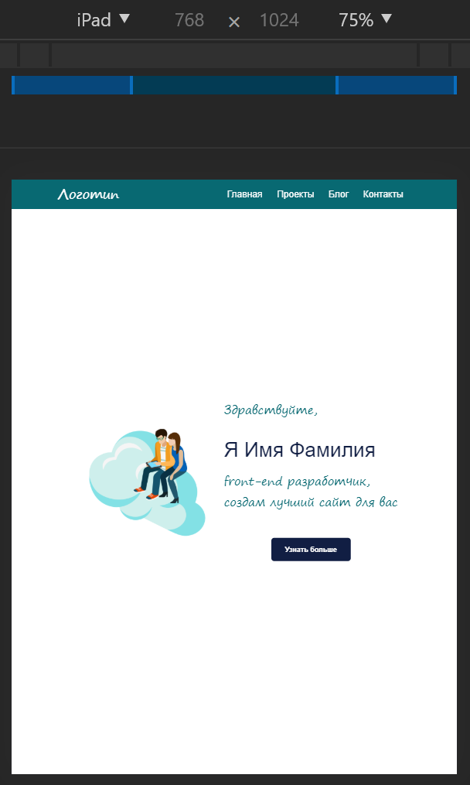
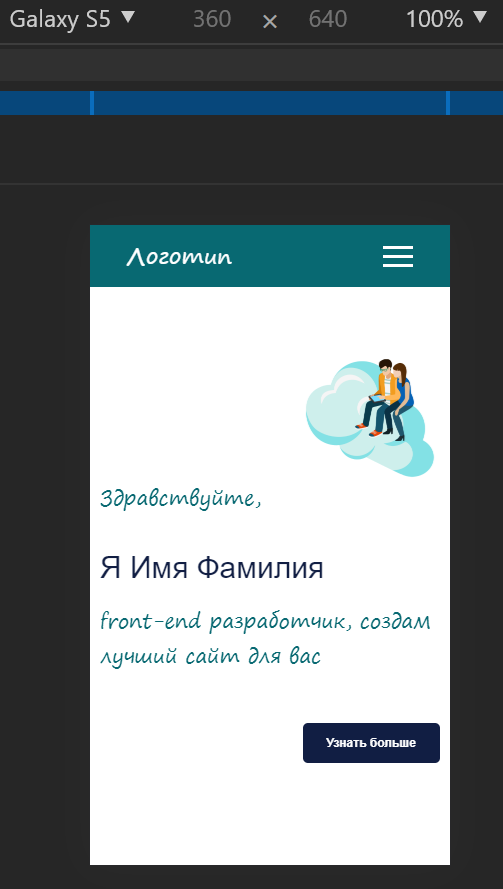

1
Адаптивная версия сайта
сложнов VS Code
Сверстай сайт для разрешений 1920, 768 и 360 пикселей по макетам. Макет — скачать для Figma или открыть онлайн.


🖥️ Это большое задание — делай его в VS Code на компьютере и открывай страницу в браузере. Не забудь выложить результат на свой сайт на GitHub!